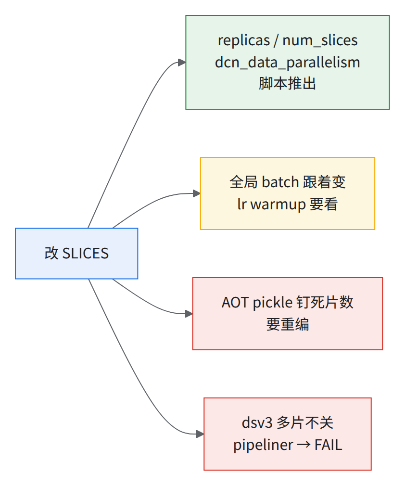
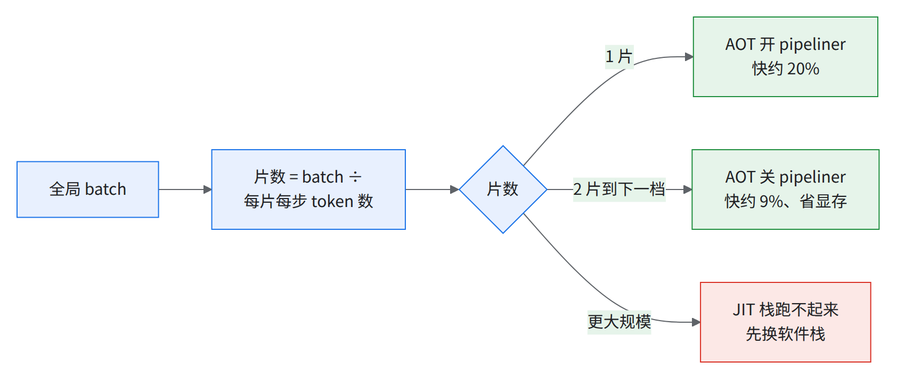
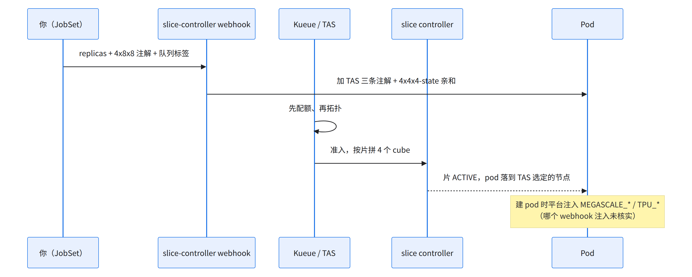
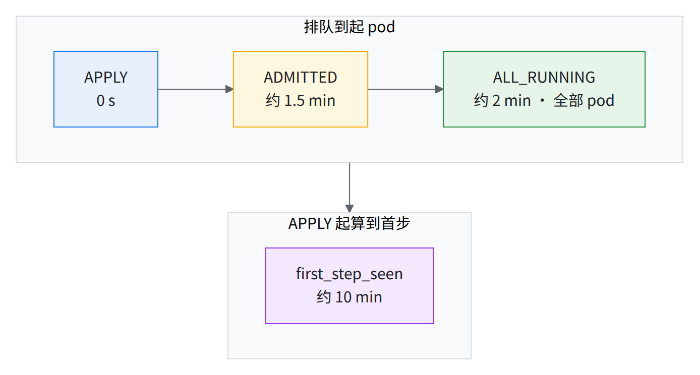
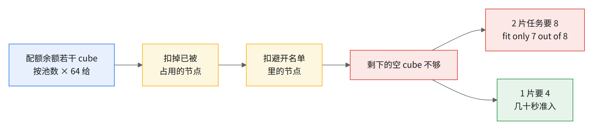
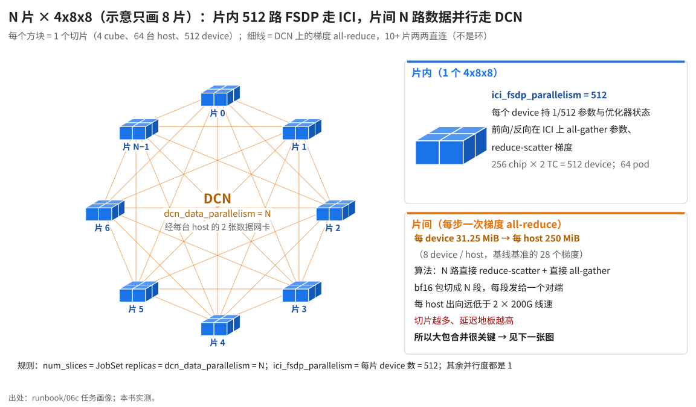
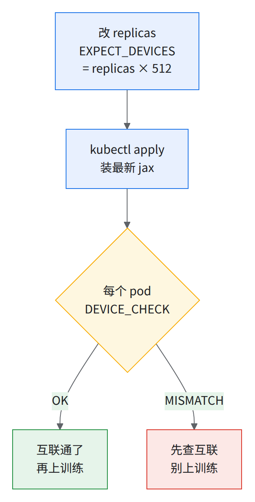
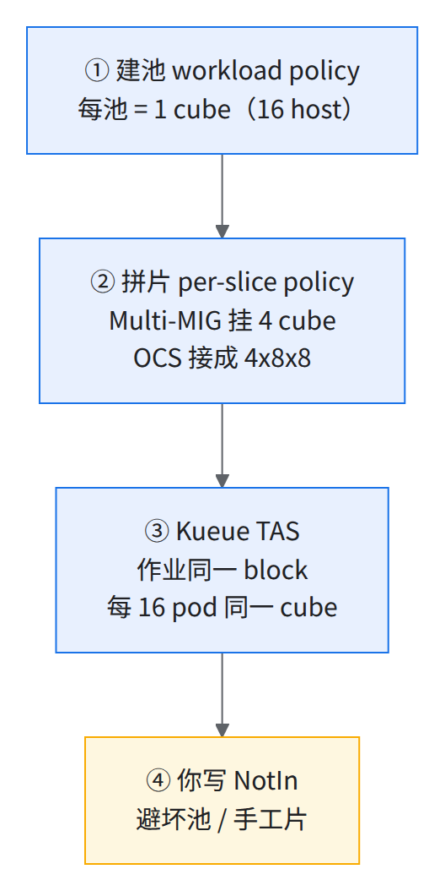

06 申请 slice：数量、形状、placement、多片互联
06b / 06c 讲「跑什么」，本节讲「怎么把卡要到手」。
💡多片互联不用额外声明
replicas: N+ pod 注解cloud.google.com/gke-tpu-slice-topology: 4x8x8+ 标签kueue.x-k8s.io/queue-name就够；本书的更大规模连通测试作业只多加了一个 libtpu 网卡 flag，更大规模也连通（§5.3）。
- 256 芯 一片 = 64 pod × 4 芯
- 72% 10+ 片 JIT 弱扩展效率（对 1 片）
- 35% 10+ 片 AOT 步时比首跑 JIT 缩短（本书复跑现成 AOT 产物；生产作业口径约 40%）
- 数十个 空 cube 才准入 10+ 片
本节用词：
| 词 | 一句话 |
|---|---|
| 片（slice） | ICI 环面 = JobSet 一个 replica；本书统一 4x8x8 = 256 芯 = 64 host = 512 device |
| cube | 4x4x4 = 64 芯 = 16 host = 一个节点池（02 §2.4） |
| DCN | 片间网络：eth1 / eth2（02 §2.4 的 --additional-node-network） |
| megascale | libtpu 跨片通信层，靠 MEGASCALE_* 找协调者和片号 |
| TAS | Kueue 按 Topology 层级决定 pod 落在哪 |
| 开 / 关 pipeliner | AOT 编译时开 / 关 collective pipeliner |
| 按书复跑 | 按本书步骤从头复跑的实测 |
1.五个问题的短答案
| 问题 | 答案 | 细节 |
|---|---|---|
| 片数怎么选 | = DCN data 轴；多一片 batch 加一份、步时变慢；AOT 换片数要重编 | §2 |
| 一片 256 芯怎么申请 | replicas: 1、completions/parallelism: 64、拓扑注解、每 pod google.com/tpu: 4、队列标签 + nodeSelector、toleration、hostNetwork |
§3 |
| 10+ 片怎么申请 | 只差 replicas: N，overlay 的 num_slices、dcn_data_parallelism 写 N |
§4 |
| 多片默认连通吗 | 连通，MEGASCALE_* 由 GKE 侧建 pod 时注入（具体组件未核实，§5）。没有整 pod 的 ICI 大片（见经验教训第 7 条） |
§5 |
| placement / TAS 要不要写 | 不用：建池时挂好（02 §2.3–2.4），拼片另建（05 §5.1）；TAS 约束 webhook 按注解加 | §5.4 |
2.片数怎么选、选了意味着什么
2.1 片数改动哪些字段 源runbook/scripts/06-jobset.sh
06-jobset.sh 只收 SLICES 和 TOPO，其余推出来：
| 你设的 | 推出来的 | 写到哪 | 1 片 | 10+ 片 |
|---|---|---|---|---|
SLICES |
JobSet replicas |
spec.replicatedJobs[0].replicas |
1 | 10+ |
SLICES |
overlay num_slices = dcn_data_parallelism |
config_overlay.yml | 1 | 10+ |
TOPO=4x8x8 |
每片芯片数 = 4×8×8 | — | 256 | 256 |
TOPO |
每片 pod 数 = 芯片数 ÷ 4（每台 host 4 芯） | completions / parallelism |
64 | 64 |
TOPO |
每片 device 数 = 芯片数 × 2 | 容器 env ICI_FSDP_PARALLELISM |
512 | 512 |
TOPO |
slice 形状 | pod 注解 cloud.google.com/gke-tpu-slice-topology |
4x8x8 | 4x8x8 |
| 两者 | 总 device 数 = SLICES × 芯片数 × 2 | 日志里 jax.devices() returned N |
512 | 数千 |
- 多片实测日志
Num_devices: <设备数>, shape (1, <片数>, 1, 512, 1, ...)：10+ 片 × 每片 512 device 全部认到（第 2 维是片数、对应片间数据并行，512 对应片内 FSDP，见 §5.1）。每个 device 打印成MegaScalePjRtDevice(... slice_id=…)，带着自己所在的片号。TOPO芯片数不是 64 的倍数报错退出（06-jobset.sh 的 TOPO 校验）。

读图：只有绿格自动，其余自己管。
- batch：每片每步数百万 token，多片每步 token 随片数线性增长 [推断]；实测中片越多、30 步 loss 降得越少。
- AOT 钉死
COMPILE_TOPOLOGY_NUM_SLICES、dcn_data_parallelism。 - preflight：
RECIPE=dsv3（06b）查collective-pipeliner-forward（06-jobset.shpreflight）：06b 多片 AOT temp 95.87 GiB 超上限。
2.2 片数和步时（选片数时看这张表）
JIT 列出自 06c §6.5 和多片实测，AOT 列出自本书的提前编译实测；稳态 p50。
| 片数 | 芯片 | JIT 弱扩展效率（比 1 片慢） | AOT 开 pipeliner：比同片数 JIT 缩短 | AOT 关 pipeliner：比同片数 JIT 缩短 | 备注 |
|---|---|---|---|---|---|
| 1 | 256 | 100%（基准） | 30% | 10% | JIT 基准是合成数据，换真数据慢 1–2% |
| 2 | 512 | 78–79%（慢 25–30%） | 20% | 25–30% | |
| 4 | 1,024 | 82%（慢 20%） | — | — | |
| 8 | 2,048 | 78%（慢 30%） | 15% | 25% | |
| 10+ | 数千 | 72% | — | 35% | 现成编译产物，口径不同，不能和其它行连成曲线；生产作业口径约 40% |
| 下一档 | — | 更低 | 25%（双峰，按均值 10%） | 未实测（被抢占后没准入） | |
| 更大规模 | — | 挂在 jax.devices() |
— | — | 更大规模的两档各实测一次；裸 device check 过更大规模，问题在软件栈（§5.3）。更大规模的生产作业用提前编译（AOT）跑通过，不是平台硬墙（06c §6.9） |
效率 = 1 片 JIT p50 ÷ N 片 JIT p50；AOT 两列 = 1 − AOT p50 ÷ 同片数 JIT p50（2 片 JIT 两次，给范围）。
片数越多每步越慢：8 片起片数再往上，步时继续变长；更大规模没出步。同配置 10+ 片另两次实测与上表 10+ 片相差不到 1%（06c §6.6）；更大规模「挂住约 17 min」见 06c §6.9。
怎么选：

- 读图：1 片时开 pipeliner 比关 pipeliner 快约 20%，2 片起反过来，关掉快约 9% [推断：同片数 AOT 开 pipeliner 与关 pipeliner 的 p50 直接相比]；多片关掉反快的机制未查。
- 提前编译（AOT）时开不开 pipeliner 没有 preflight 拦，自己选对。
- 先定每片形状再定片数：训练全是 4x8x8；4x4x4 只做冒烟（06c §6.5）。
⚠️更大规模：本书的 JIT 训练栈目前跑不起来训练栈 jax 0.11.0 / libtpu 0.0.48；上更大规模要先换软件栈（06c §6.9）。
- 准入两道闸：配额、拓扑（05 §5.2）；片越多越难放。
3.申请一片 256 芯（1 × 4x8x8）
3.1 JobSet 里决定「要什么卡」的字段
下面是实测作业实际提交的 yaml。
apiVersion: jobset.x-k8s.io/v1alpha2
kind: JobSet
metadata:
name: <作业名>
namespace: default
labels:
app: <作业名>
owner: <团队名>
kueue.x-k8s.io/queue-name: multislice-queue # ① 进哪个 LocalQueue：不写就不归 Kueue 管
spec:
ttlSecondsAfterFinished: 86400
coordinator:
jobIndex: 0
podIndex: 0
replicatedJob: worker
failurePolicy:
maxRestarts: 0 # ② 任何一个 pod 失败，整个 JobSet 就 Failed（不自动重来）
rules:
- name: restart_on_failure
action: RestartJobSet
onJobFailureReasons:
- BackoffLimitExceeded
network:
enableDNSHostnames: true
publishNotReadyAddresses: true
replicatedJobs:
- name: worker
replicas: 1 # ③ 片数
template:
spec:
backoffLimit: 0
completionMode: Indexed
completions: 64 # ④ 每片 pod 数 = 256 芯 ÷ 4 芯/pod
parallelism: 64
template:
metadata:
annotations:
cloud.google.com/gke-tpu-slice-topology: 4x8x8 # ⑤ 每片形状：slice controller 按它拼片
gke-gcsfuse/volumes: 'true'
spec:
hostNetwork: true # ⑥ 用 host 的网卡（eth1/eth2 = DCN）
dnsPolicy: ClusterFirstWithHostNet
restartPolicy: Never
terminationGracePeriodSeconds: 30
nodeSelector:
cloud.google.com/gke-networking-dra-driver: 'true' # ⑦ 只落在带多网卡 DRA 标签的节点（02 §2.4 --node-labels）
cloud.google.com/gke-tpu-accelerator: tpu7x
tolerations:
- effect: NoSchedule
key: google.com/tpu
operator: Exists
containers:
- name: jax-tpu
image: mirror.gcr.io/library/python@sha256:4d1caded1f729ae443eb803f26ffde7b61e696aeaef62f099abb6dd6b14257c7
securityContext:
privileged: true
ports:
- containerPort: 8471
- containerPort: 8080
- containerPort: 8431
resources:
limits:
google.com/tpu: '4' # ⑧ 每 pod 独占一台 host 的 4 芯
requests:
google.com/tpu: '4'
priorityClassName: high # ⑨ 优先级
affinity:
nodeAffinity:
requiredDuringSchedulingIgnoredDuringExecution:
nodeSelectorTerms:
- matchExpressions:
- key: cloud.google.com/gke-tpu-slice # ⑩ 避开已被手工 Slice 占用的节点
operator: NotIn
values:
- <手工片名>
- <手工片名>
# …（共 16 项，是 05-avoid-manual-slices.py 在提交那一刻生成的，每次都要重新生成）
- ①：
multislice-queue（03 §3.5）→cluster-queue；flavortpu7x-flavor-v2、AdmissionCheckdynamic-slicing-ac、7 层dynamic-slicing-topology-v2（03 §3.4，runbook/scripts/03-kueue-topology-flavor.yaml.tmpl）；集群原有的 flavor / 拓扑可能和这套不同，以集群上实际的 ResourceFlavor / Topology 对象为准。 - ③④⑤：配额 = replicas × completions × 4。podSetAssignment 的
count= N × 64、google.com/tpu= N × 64 × 4（N 为片数）。 - ⑨：本书 high 800 / medium 500 / low 100，
preemptionPolicy: Never（runbook/scripts/03-kueue-priority.yaml）。共享集群上可能已有同名 high，会静默抢占集群上的其他作业，要清空（export POD_PRIORITY=，见 06c §6.5.1 的优先级警告框）；上面 YAML 里的 high 是独占集群的默认值。 - ⑩ 是时点值：
AVOID_MANUAL=1 06-jobset.sh apply每次重新生成。
3.2 平台在 pod 上补了什么 源worker-0-0 的真实 pod 对象

更大规模实测时平台多加的字段（逐字，截短）：
metadata:
annotations:
kueue.x-k8s.io/podset-required-topology: cloud.google.com/gce-topology-block # 整个作业必须落在同一个 block
kueue.x-k8s.io/podset-slice-required-topology: cloud.google.com/gke-tpu-partition-4x4x4-id # 每 16 个 pod 必须在同一个 cube
kueue.x-k8s.io/podset-slice-size: "16"
kueue.x-k8s.io/workload: <作业名>
jobset.sigs.k8s.io/group-replicas: "<片数>"
jobset.sigs.k8s.io/job-group-index: "0"
jobset.sigs.k8s.io/coordinator: <jobset>-worker-0-0.<jobset>
spec:
nodeSelector:
cloud.google.com/gke-accelerator-count: "4" # 新增
cloud.google.com/gke-tpu-topology: 4x8x8 # 新增
kubernetes.io/hostname: <节点名> # TAS 选定的具体节点
affinity:
nodeAffinity: # 在你写的 NotIn 之外，又加了一条：
- key: cloud.google.com/gke-tpu-partition-4x4x4-state
operator: In
values: [HEALTHY, DEGRADED]
containers:
- env:
- name: MEGASCALE_NUM_SLICES
valueFrom: {fieldRef: {fieldPath: "metadata.annotations['jobset.sigs.k8s.io/group-replicas']"}}
- name: MEGASCALE_SLICE_ID
valueFrom: {fieldRef: {fieldPath: "metadata.annotations['jobset.sigs.k8s.io/job-group-index']"}}
- name: MEGASCALE_COORDINATOR_ADDRESS
value: <jobset>-worker-0-0.<jobset>:9915
- name: MEGASCALE_PORT
value: "9915"
- name: TPU_WORKER_HOSTNAMES # 本片 64 台 host：<jobset>-worker-0-0.<jobset>,…,<jobset>-worker-0-63.<jobset>
- name: TPU_PROCESS_ADDRESSES # 同上，每个加 :8471
- name: TPU_PROCESS_PORT
value: "8471"
- name: TPU_TOPOLOGY
value: 4x8x8
- name: TPU_HOST_BOUNDS
value: 2,4,8
- name: TPU_CHIPS_PER_HOST_BOUNDS
value: 2,2,1
- name: TPU_TOPOLOGY_WRAP
value: true,true,true
- name: TPU_ACCELERATOR_TYPE
value: tpu7x-512
- name: TPU_WORKER_ID
value: "0"
- TAS 注解和亲和：webhook 见拓扑注解就加（05 §5.2 第 1 步；03 §3.7 自检）。
MEGASCALE_*/TPU_*JobSet 里没有（1 片和 10+ 片实测的grep -c MEGASCALE为 0），建 pod 时注入（runbook/scripts/04-gen-jobset.sh）。MEGASCALE_NUM_SLICES随replicas变；overlay 的num_slices、dcn_data_parallelism要手动同步（§2.1）。
3.3 看它到底拿到了什么（只读） 源runbook/scripts/06-jobset.sh watch / verify 子命令
提交（06-jobset.sh apply）后：
# 在你的工作站上跑（KUBECONFIG 指向集群）
JOBSET_NAME=<作业名> # 换成你的
kubectl get workload -o wide | grep "jobset-$JOBSET_NAME-"
WL=$(kubectl get workload -o name | grep "jobset-$JOBSET_NAME-" | head -1)
kubectl get "$WL" -o jsonpath='{range .status.conditions[*]}{.type}{"\t"}{.status}{"\t"}{.message}{"\n"}{end}'
kubectl get slices.accelerator.gke.io --no-headers | grep "jobset-$JOBSET_NAME-"
kubectl get pods -l jobset.sigs.k8s.io/jobset-name=$JOBSET_NAME --no-headers | awk '{print $3}' | sort | uniq -c
期望：
kueue.gke.io/TPUSlicesProvisioned：1 片TPU slices: 1 created，10+ 片TPU slices: N−1 reused, 1 created。- Slice 数 = 片数且
ACTIVE；pod 数 = 片数 × 64 且Running；worker-0-0 日志：[DIAG] … jax.devices() returned 512 devices，elapsed 约 21 s（1 片）。
4.申请 10+ 片（数千芯）
4.1 和 1 片的全部差别
要卡相关只一行：
replicatedJobs:
- name: worker
replicas: N # 1 → N；completions / parallelism 仍是 64，注解仍是 4x8x8
overlay 差别：
dcn_data_parallelism: N # 1 → N
num_slices: N # 1 → N
其余 diff 与要卡无关：env tar、pickle、label、ttl、避开名单（坏 cube 的节点池、手工 Slice）。
4.2 两条提交路径（都是实际用过的）
runbook 路径（10+ 片实测用过）：
# 在工作站上跑；先 source env.sh（06c §6.1）
cd "$RUNBOOK_DIR"/scripts
SLICES=<片数> TOPO=4x8x8 ./06-jobset.sh render | less # 只打印，不改集群
SLICES=<片数> ./06-jobset.sh overlay # 生成并上传 num_slices=dcn_data_parallelism=N 的 overlay
SLICES=<片数> AVOID_MANUAL=1 ./06-jobset.sh apply # 先跑 preflight，通过后才 kubectl apply
./06-jobset.sh watch # 反复跑：JobSet / Workload / Slice / Pod
⛔
overlay子命令会写数据桶06-jobset.sh overlay往gs://$DATA_BUCKET/configs/submit/$RUN_NAME/config_overlay.yml写文件。数据桶是只读的或属于别人时，先把DATA_BUCKET换成你自己可写的桶再跑。
实测 10+ 片的时间线（加载 AOT 产物的作业，不是本章 06-jobset.sh 的 JIT 路径）：下图是一条加载提前编译（AOT）产物的 10+ 片作业，由实测驱动脚本的 timeline.log 记下各时间点，秒数都从提交（APPLY）算起。照本章 06-jobset.sh 跑是 JIT，首步耗时对照 06c 图 c13：

读图：准入到全 Running 不到半分钟，大头是全 Running 之后到首步的约 8 min。日志 jax.devices() returned <设备数> devices，elapsed 约 99 s；10+ 片全 ACTIVE 114–136 s，任务口径 p50 166 s（04 §4.8、05 §5.1）。下载脚本 06-jobset.sh 走 JIT，首步要四十多分钟（40–50 min，从 apply 起算，06c 图 c13）；用 AOT 产物时约 10 min（加载约 3 min，不在线编译）。
提交之前先确认拼得出 10+ 片（按书复跑实测没准入）
⚠️配额够不代表能准入10+ × 4x8x8 要数十个空 cube，TAS 按 cube 数判。
- 按书复跑提交 10+ 片任务：CQ 余额理论上够本任务，但 12 min 没准入：
QuotaReserved False couldn't assign flavors to pod set worker: topology "super-slice-topology" allows to fit only <N> out of <所需 cube 数> slice(s). Total nodes: <节点总数>; excluded: affinity: <N>, nodeSelector: <N>, resource "google.com/tpu": <N>
这行的后半段是 TAS 排除节点的原因：resource "google.com/tpu": <N> 是 TPU 已被其他作业占用的节点，affinity: <N> 是被避开名单（NotIn）排除的节点。

读图：这是先后两次提交。先交 10+ 片任务时空 cube 只剩十几个，不够；挂了 12 min 后改交 2 片任务时只剩 7 个（「7 out of 8」）。按后一次算，空 cube 只够跑 1 片。
提早发现：原因只在 Workload condition（timeline 只打 wl=[]），提交后 1 min 内看：
kubectl get $(kubectl get workload -o name | grep "jobset-$JOBSET_NAME-" | head -1) -o jsonpath='{.status.conditions[0].message}{"\n"}'
fit only K out of M 且 K 远小于 M（所需 cube 数）就别等。
5.多片默认连通吗？靠什么连？
5.1 网络分层
| 范围 | 走什么 | 谁建的 | 证据 |
|---|---|---|---|
| 一片之内 | ICI（OCS 接 cube） | slice controller 拼片（05 §5.1） | TPU_TOPOLOGY=4x8x8、TPU_TOPOLOGY_WRAP=true,true,true；fsdp=512 |
| 片与片之间 | DCN：eth1 / eth2 | 建池附加网卡（02 §2.4）+ hostNetwork: true |
--megascale_grpc_interface_prefixes=eth1,eth2,lo；data=N |
| 整个 pod | 没有整 pod ICI 大片 | — | 经验教训第 7 条 |

5.2 用户需要写什么、平台补什么
| 东西 | 谁写 | 在哪 |
|---|---|---|
replicas: N |
你 | JobSet |
cloud.google.com/gke-tpu-slice-topology: 4x8x8 |
你 | pod 模板注解 |
kueue.x-k8s.io/queue-name |
你 | JobSet label |
hostNetwork: true、nodeSelector gke-networking-dra-driver: 'true' |
你 | pod spec |
LIBTPU_INIT_ARGS=--megascale_grpc_interface_prefixes=eth1,eth2,lo |
你 | 容器 env |
num_slices / dcn_data_parallelism = N |
你 | 训练 overlay |
MEGASCALE_NUM_SLICES / SLICE_ID / COORDINATOR_ADDRESS / PORT |
平台 | 建 pod 时注入（§3.2，注 1） |
TPU_WORKER_HOSTNAMES / TPU_TOPOLOGY / TPU_HOST_BOUNDS … |
平台 | 同上 |
| TAS 三条注解和 4x4x4-state 亲和 | kueue-slice-controller webhook | 按你的 topology 注解加（05 §5.2） |
| 拼片（per-slice workload policy + Multi-MIG + OCS） | slice controller | 准入后（05 §5.1） |
- 注 1：按书复跑核对（实测集群按书复跑任务的 worker-0-0）：JobSet 里
MEGASCALE0 次、pod 里 4 个都在，COORDINATOR_ADDRESS=<jobset>-worker-0-0.<jobset>:9915。 spec.coordinator、spec.network这个作业没写照样连通，不是连通必要条件；训练里的作用没单独测。
5.3 最小证据：更大规模纯 device check
整份 110 行逐字（名单截短）：
apiVersion: jobset.x-k8s.io/v1alpha2
kind: JobSet
metadata:
name: <作业名>
namespace: default
labels:
kueue.x-k8s.io/queue-name: multislice-queue
spec:
failurePolicy:
maxRestarts: 0
replicatedJobs:
- name: worker
replicas: <片数>
template:
spec:
backoffLimit: 0
completionMode: Indexed
parallelism: 64
completions: 64
template:
metadata:
annotations:
cloud.google.com/gke-tpu-slice-topology: 4x8x8
spec:
restartPolicy: Never
hostNetwork: true
dnsPolicy: ClusterFirstWithHostNet
nodeSelector:
cloud.google.com/gke-tpu-accelerator: tpu7x
cloud.google.com/gke-networking-dra-driver: 'true'
tolerations:
- key: google.com/tpu
operator: Exists
effect: NoSchedule
containers:
- name: main
image: mirror.gcr.io/library/python@sha256:4d1caded1f729ae443eb803f26ffde7b61e696aeaef62f099abb6dd6b14257c7
securityContext:
privileged: true
ports:
- containerPort: 8471
env:
- name: EXPECT_DEVICES
value: '<片数 × 512>'
- name: LIBTPU_INIT_ARGS
value: --megascale_grpc_interface_prefixes=eth1,eth2,lo
- name: TPU_STDERR_LOG_LEVEL
value: '0'
- name: TPU_MIN_LOG_LEVEL
value: '0'
command:
- bash
- -c
- 'set -ex
pip install -U --pre jax jaxlib libtpu requests -f https://storage.googleapis.com/jax-releases/libtpu_releases.html
python -c ''import importlib.metadata as m; print("VER", m.version("jax"), m.version("libtpu"))''
timeout 900 python -c ''import jax,os,sys,time; t=time.time(); n=jax.device_count(); e=int(os.environ["EXPECT_DEVICES"]); print("DEVICE_CHECK", "OK" if n==e else "MISMATCH", n, e, "init_s=%.1f"%(time.time()-t)); sys.exit(0 if n==e else 1)''
'
resources:
requests:
google.com/tpu: '4'
limits:
google.com/tpu: '4'
affinity:
nodeAffinity:
requiredDuringSchedulingIgnoredDuringExecution:
nodeSelectorTerms:
- matchExpressions:
- key: cloud.google.com/gke-tpu-slice
operator: NotIn
values:
- <手工片名>
# …（共 32 项，提交那一刻的手工 Slice 名单，照抄会过时；用 05-avoid-manual-slices.py 重新生成）
priorityClassName: high
# 在工作站上跑。当时的提交命令没存档，本书的约定是 kubectl apply -f（未实测逐字）
kubectl apply -f <你的清单>.yaml

读图：现成的多片冒烟，与训练栈版本无关。期望每 pod DEVICE_CHECK OK <设备数> <设备数> init_s=…。
实测：全部 pod 除 1 个外都 OK，init_s 最小约 17 s、中位约 58 s、p99 约 66 s、最大约 68 s；余 1 个是拉日志 i/o timeout，jobset Completed。jax 0.11.2 / libtpu 0.0.49。
- 10+ 片同款（
4x8x8 × 10+ --multi-nic）：END <作业名> term=Completed elapsed=264s result=[DEVICE_CHECK OK <设备数> <设备数>]。 - 对照：训练栈（jax 0.11.0 / libtpu 0.0.48 + 5 个 flag）更大规模挂在
jax.devices()；判别作业被抢占，未实测。 - AOT 对照：更大规模的生产作业用提前编译（AOT）跑通过，所以挂住不是平台问题；嫌疑收窄到 flag 或 JIT 初始化路径 [推断]。
5.4 placement policy 和 TAS 各管什么 源runbook/02 §2.3–2.4; scripts/03-kueue-topology-flavor.yaml.tmpl

读图：只有黄色那层要每次提交前重新生成。
| 层 | 在哪声明 | 用户要做的 |
|---|---|---|
| ① | 02 §2.3，建池 --placement-policy（注 1） |
无 |
| ② | slice controller 建目标拓扑 workload policy | 无（生命周期 05 §5.1；拼片失败看 05 §5.6） |
| ③ | webhook 按注解加（§3.2） | 只写注解；整 pod 1 个 gce-topology-block（BLOCK=${RESERVATION}-block-0001），必满足 |
| ④ | 你写的 nodeAffinity | 每次提交前重新生成（§3.1 ⑩） |
- 注 1：
gcloud compute resource-policies create workload-policy ${CLUSTER}-ss-policy --type=HIGH_THROUGHPUT --accelerator-topology=4x4x4 --accelerator-topology-mode=provision_only。
💡JobSet 里没有 placement 字段，也不需要有「多片放一起」是 webhook 加的 block 约束；片间都走 DCN，步时里 DCN 暴露部分（数百 ms）由此而来。
6.没弄清 / 未实测
- 注入
MEGASCALE_*/TPU_*的是 JobSet 还是 GKE 的 TPU webhook：未核实。 - 不带
--megascale_grpc_interface_prefixes=eth1,eth2,lo能不能跨片：未实测。 - 10+ 片实测中的
N−1 reused：05 §5.2 说复用（--reuse-slices=true）两个集群都没开，条件没查（[推断] 可能是前一次提交留下的片）。 - 下一档关 pipeliner 的运行没有步时；更大规模的训练栈挂住，根因没定位（判别作业没跑成）。
- 10+ 片和更大规模两条提交命令是还原的，未实测。
检查点
说得出（先自己答，再点开对答案）
多片互联要在 JobSet 里额外声明什么？
不用：replicas: N+ 拓扑注解 + 队列标签，MEGASCALE_*由 GKE 侧注入、具体组件未核实，§5一片 4x8x8 为什么是 64 个 pod、每 pod
google.com/tpu: 4？256 芯 ÷ 每 host 4 芯 = 64 台，一 pod 一台，§3片数定了意味着什么？
= DCN 数据并行度，每多一片全局 batch 多一份；AOT 换片数要重编，§2placement policy 在 JobSet 里写吗？
不写：建节点池时就定了，§5.4
交棒：片数和 JobSet 定了，下一步把数据、编译缓存放到离卡近的地方 → 06a；之后按 06b（公开配置）或 06c（大号 MoE 模型 JIT 对照）跑起来。